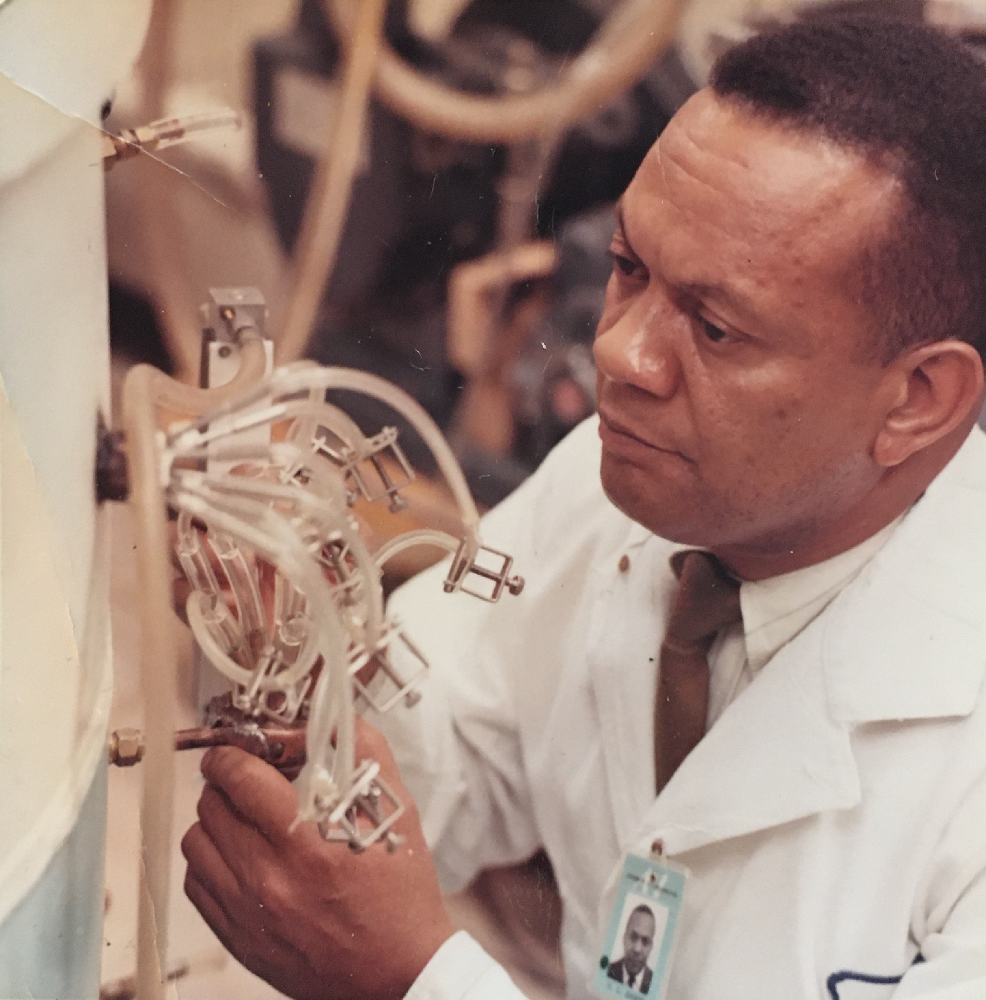

Roscoe L. Koontz

Roscoe L. Koontz foi um físico afro-americano que desempenhou um papel essencial no avanço da segurança nuclear. Ele trabalhou no Oak Ridge National Laboratory, onde ajudou a desenvolver tecnologias de proteção radiológica, garantindo a segurança dos trabalhadores expostos à radiação. Sua contribuição foi crucial para a área da física nuclear aplicada.
Principais Contribuições
- Trabalhou no desenvolvimento de sistemas de proteção contra radiação.
- Atuou no Oak Ridge National Laboratory, um dos principais centros de pesquisa nuclear dos EUA.
- Foi um dos primeiros físicos afro-americanos a se destacar na área de tecnologia nuclear.
- Contribuiu para avanços na segurança de trabalhadores expostos à radiação.
Saiba mais
Voltar